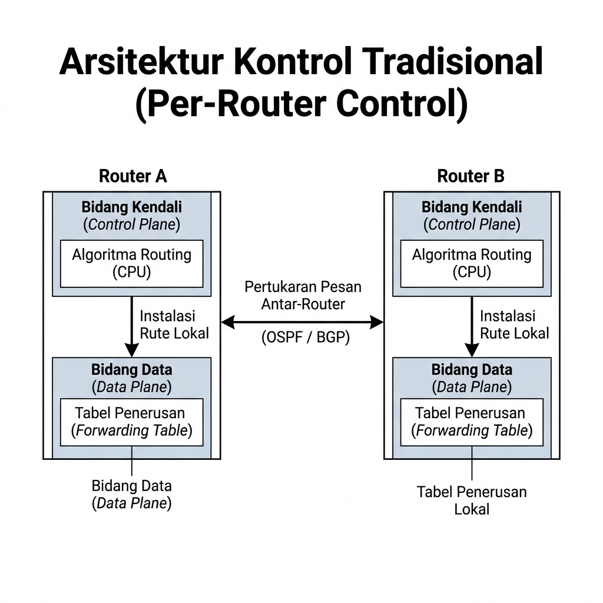
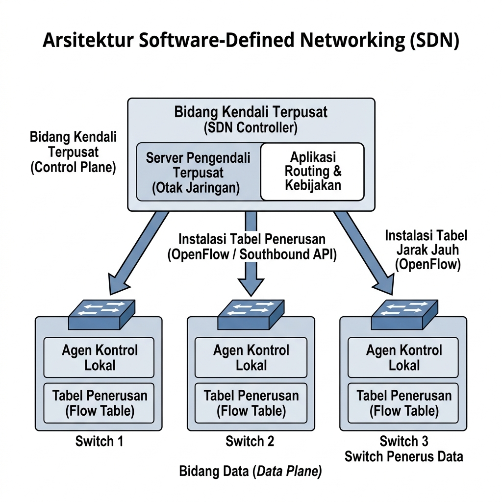
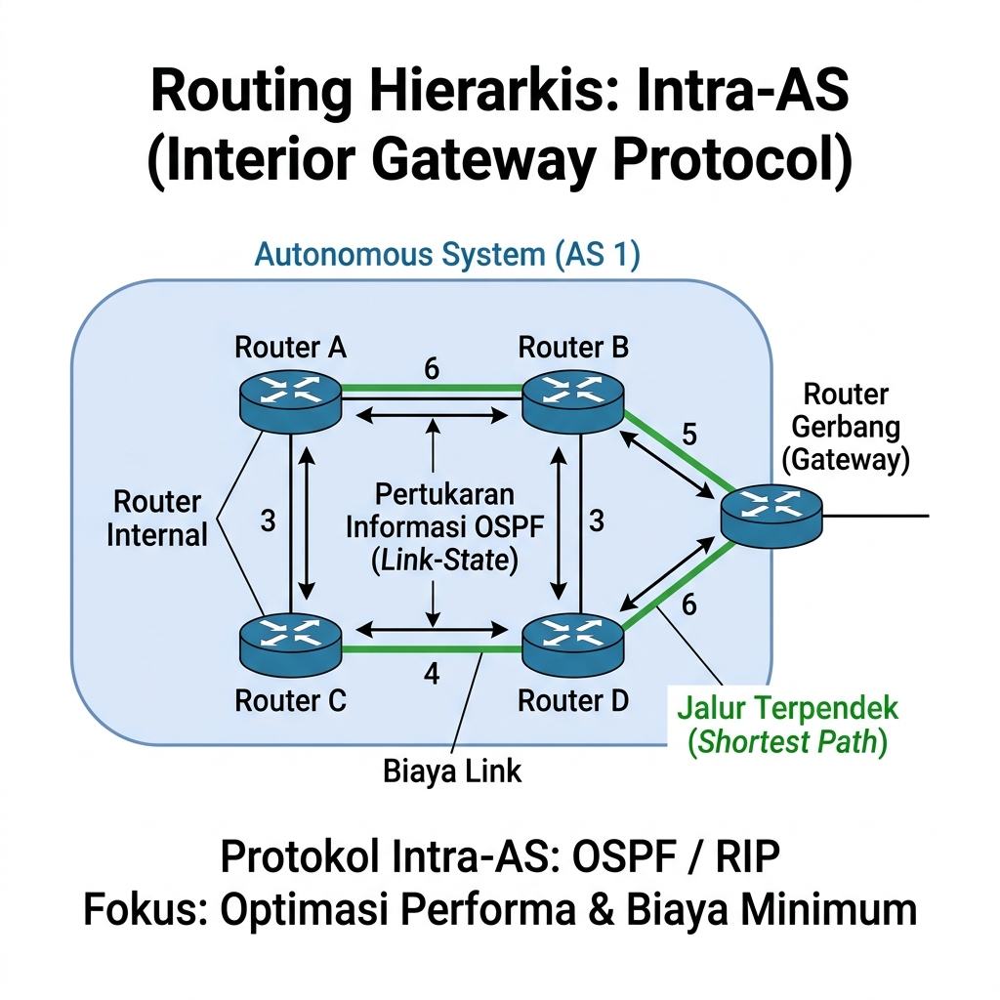
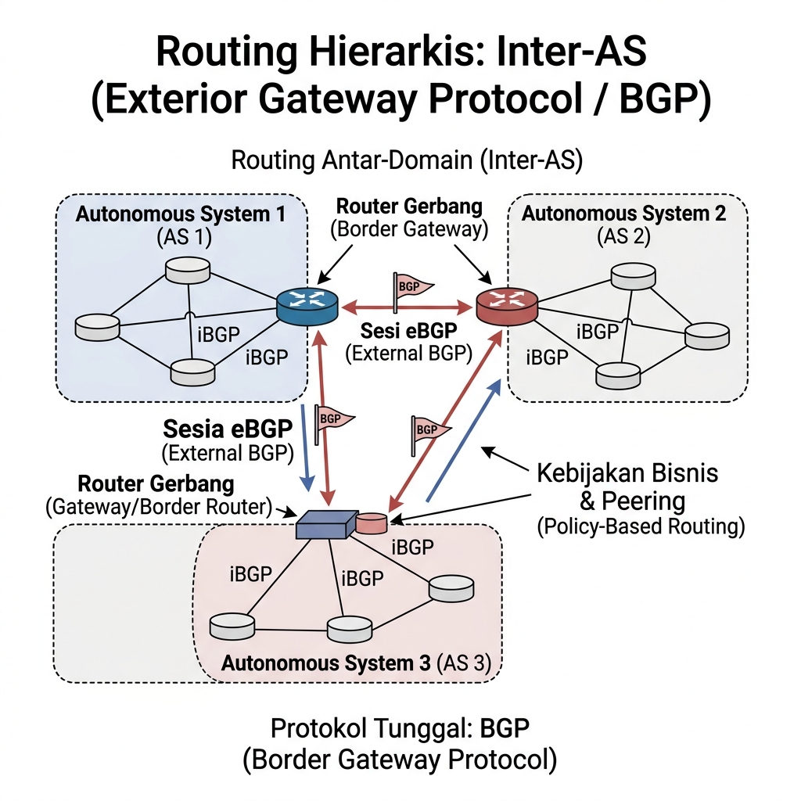
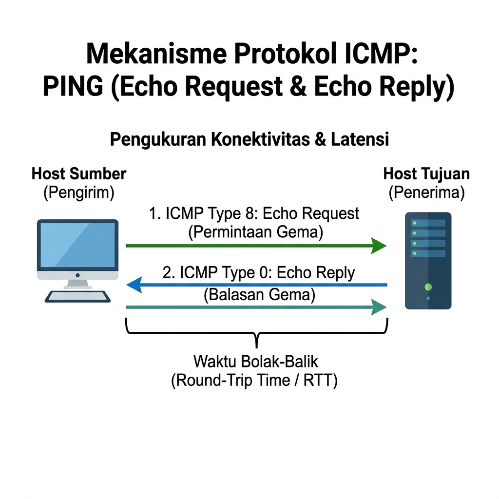
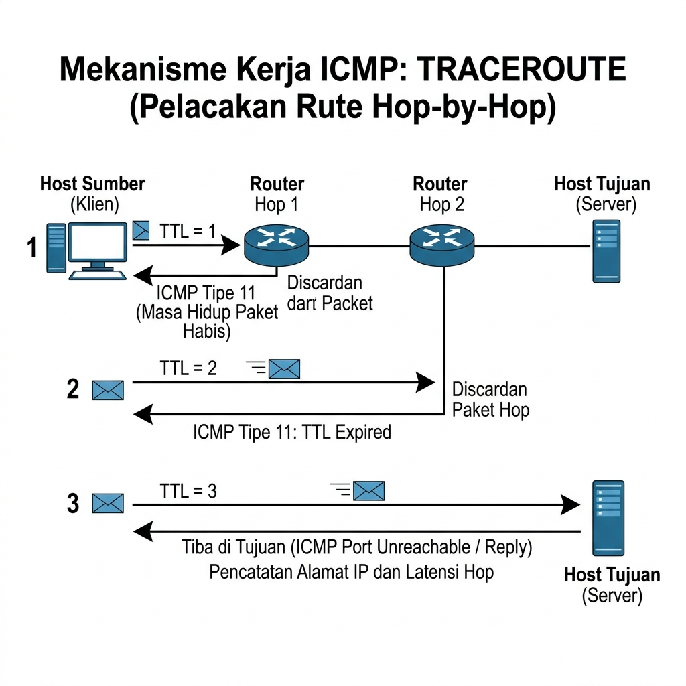

Referensi Utama: Kurose & Ross — Computer Networking (8th Ed)
Dosen Pengampu:
Bagian 1: Pendahuluan Control Plane
Bagian 2: Algoritma Routing
Bagian 3: Protokol Routing di Internet
Bagian 4: Protokol Bantuan & Manajemen
Di Pertemuan 6, kita belajar tentang Data Plane (pengalamatan IP dan subnetting). Sekarang kita masuk ke Control Plane.
Bagaimana Control Plane diimplementasikan? Ada dua pendekatan utama di internet saat ini:
Fokus: Kontrol Tradisional (Per-Router Control)
Pada pendekatan tradisional, fungsi Control Plane dan Data Plane menyatu erat di dalam setiap kotak router fisik (arsitektur vertically integrated / monolitik).
Fokus: Software-Defined Networking (SDN)
SDN merevolusi arsitektur jaringan dengan memisahkan (decoupling) logika kendali (Control Plane) dari perangkat keras penerus paket (Data Plane).


Tujuan Routing: Menemukan jalur (rute) "terbaik" dari sumber ke tujuan. "Terbaik" bisa berarti rute dengan biaya terkecil (least cost), tercepat, atau paling tidak macet (least congested).
Abstraksi Graf: G = (N, E)
{u, v, w, x, y, z}).
Secara umum, algoritma routing dibagi berdasarkan seberapa banyak informasi yang dimiliki oleh sebuah router sebelum menghitung rute:
Tujuan: Menghitung biaya terpendek (Least-cost path) dari satu titik sumber (source) ke semua titik lain di dalam jaringan.
D(v) = min( D(v), D(w) + c(w,v) )
D(v): Estimasi jarak terpendek dari sumber ke node v.c(w,v): Biaya fisik dari tetangga w ke v.Penerapan di Lapisan Network: Digunakan oleh protokol OSPF. Setiap router menjalankan Dijkstra secara mandiri setelah menerima gambaran topologi utuh dari router lain, untuk mengisi Forwarding Table-nya.
Misalkan node u adalah sumber (source). Kita akan mencari rute terpendek ke seluruh node.
Graf topologi 6 router beserta cost link antar node (Referensi Kurose & Ross)
| Step | N' (Node Terpilih) | D(v), p(v) | D(w), p(w) | D(x), p(x) | D(y), p(y) | D(z), p(z) |
|---|---|---|---|---|---|---|
| 0 (Init) | u | 2,u | 5,u | 1,u | ∞ | ∞ |
| 1 | u, x | 2,u | 4,x | - | 2,x | ∞ |
| 2 | u, x, y (pilih y) | 2,u | 3,y | - | - | 4,y |
| 3 | u, x, y, v | - | 3,y | - | - | 4,y |
| 4 | u, x, y, v, w | - | - | - | - | 4,y |
| 5 | u, x, y, v, w, z | - | - | - | - | - |
p(v) = Node pendahulu (predecessor).
Setelah langkah 5, tabel forwarding terbentuk, dan rute ke z adalah:
u ➔ x ➔ y ➔ z dengan cost total 4.
Berkebalikan dengan Link-State, Distance Vector tidak menyebarkan topologi utuh. Router hanya bertukar tabel estimasi jarak dengan tetangga sebelahnya saja.
Dx(y) = minv { c(x,v) + Dv(y) }
Dx(y): Biaya minimum (estimasi) dari node x ke y.minv: Coba lewati setiap tetangga (v).cost (x ke v) + cost minimum (v ke y) yang paling kecil.
Penerapan: Protokol RIP (Routing Information Protocol) dan sebagian konsep dalam BGP (Path Vector). Algoritma ini bersifat asinkron, iteratif, dan terdesentralisasi.
Karena ukuran Internet sangat masif (ratusan juta router), tidak mungkin menyimpan seluruh rute di satu tabel global. Internet dibagi menjadi blok-blok besar otonom yang disebut Autonomous System (AS) / Domain.

Router internal berkoordinasi via OSPF untuk menghitung rute biaya terpendek (Least Cost) menuju Router Gerbang.
Karena ukuran Internet sangat masif, routing antar organisasi yang independen membutuhkan koordinasi lintas domain yang disebut Inter-AS (Exterior Gateway Routing).

Router Gerbang menghubungkan AS 1, AS 2, dan AS 3 melalui sesi eBGP dengan penegakan kebijakan bisnis (Policy Routing).
ICMP (Internet Control Message Protocol) digunakan oleh perangkat jaringan untuk saling mengirimkan pesan kesalahan (error reporting) dan informasi operasional (diagnostik).
| ICMP Tipe & Kode Umum | Fungsi | |
|---|---|---|
| Type 0 | Code 0 | Echo Reply (Balasan Ping Berhasil) |
| Type 8 | Code 0 | Echo Request (Request Pengujian Ping) |
| Type 3 | Code 3 | Destination Port Unreachable (Port aplikasi tujuan tertutup) |
| Type 11 | Code 0 | TTL Expired (Masa hidup paket habis, kunci Traceroute!) |
Menguji keterjangkauan host tujuan dan mengukur waktu latensi bolak-balik (Round-Trip Time).

Pengirim mengirim ICMP Type 8 (Request) dan menerima ICMP Type 0 (Reply) untuk menghitung RTT.
Menelusuri seluruh rute hop-by-hop dari host sumber menuju server tujuan.
TTL = 1,
TTL = 2, TTL = 3, dst.

Pemanfaatan cerdas inkrementasi TTL bertahap & pesan ICMP Type 11 untuk mengungkap rute perantara.
Di jaringan raksasa (Enterprise), admin tidak mungkin login (SSH) ke ratusan router satu per satu setiap detik untuk melihat status port. Kita butuh Network Management.
GetRequest: Manager meminta data spesifik (misal: utilisasi CPU
router).SetRequest: Manager mengubah nilai konfigurasi di Router.Trap: Router melapor mandiri ke Manager saat ada kondisi bahaya (misal:
port down / kabel dicabut).SNMP bagus untuk membaca data (statistik), namun sangat rumit dan jarang dipakai untuk konfigurasi jaringan massal (otomasi). Internet modern menggunakan pendekatan baru:
Control Plane & Routing
D(v) = min(D(v), D(w)+c) (Contoh: OSPF).
Manajemen & Protokol Pendukung
Pelaksanaan kuis dilakukan melalui website resmi kuliah2.itera.ac.id pada mata kuliah Jaringan Komputer.
Timer di bawah ini digunakan sebagai acuan batas waktu pengerjaan ujian.
Pertemuan berikutnya: Ujian Tengah Semester (UTS)
Persiapkan seluruh materi Pertemuan 1 s.d. 7 — Referensi: Kurose & Ross (Chapters 1–5)